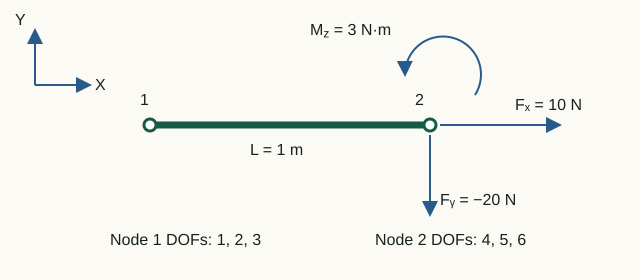

Boundary conditions and loads
A support specifies prohibited nodal motions; a load specifies generalized forces applied to the relevant components. In MKE-F these data do not change the original matrices: DOF indices and the load vector are rebuilt for each analysis.
Free and constrained DOFs
The function partitionDOFs converts support records into two disjoint lists:
fixedDOFs— DOFs with prescribed zero displacement;freeDOFs— all DOFs not restrained by SPC; with SPC alone, these are the reduced-system unknowns.
fixedDOFs ∪ freeDOFs = {1, …, n}, fixedDOFs ∩ freeDOFs = ∅
The original global matrices K and M remain unchanged (and may be sparse). This separation preserves the physical meaning of the original model and allows correct reaction recovery.
Support types
A record has the form type,node,0,0,0. Nonzero prescribed displacements are not yet supported.
Frame 113 supports all seven combinations:
| Type | Constrained | Free | Physical meaning |
|---|---|---|---|
1 | ux, uy, thetaZ | — | Fully fixed |
2 | uy, thetaZ | ux | Only ux free; rotation restrained |
3 | ux, thetaZ | uy | Only uy free; rotation restrained |
4 | ux, uy | thetaZ | Pinned support |
5 | ux | uy, thetaZ | Roller: ux restrained, rotation free |
6 | uy | ux, thetaZ | Roller: uy restrained, rotation free |
7 | thetaZ | ux, uy | Rotation restraint only |
Truss 112 has no rotation: types 1 and 4 restrain ux, uy; types 3 and 5 restrain only ux; types 2 and 6 restrain only uy. Type 7 is rejected. The editor shows three unique combinations and exports types 1, 3 and 2 respectively.
Supports are stored as fixUx/fixUy/fixThetaZ masks. Changing element family preserves them; remove thetaZ restraints before switching to a truss. Duplicate restraints report the node and component. A pin-and-roller example is CaseRollerFrame.txt.
Work-conjugate displacements and forces
Each nodal DOF has a corresponding generalized force that does work on it:
| Model | Degrees of freedom | Load components |
|---|---|---|
| truss 112 | [ux, uy] | [Fx, Fy] |
| frame 113 | [ux, uy, θz] | [Fx, Fy, Mz] |
Mz is the moment about Z, work-conjugate to rotation θz. It is not a force Fz: out-of-plane displacement uz does not exist in a planar model. A nonzero Mz at a truss node is therefore rejected rather than ignored.
Four load histories
Nodal components use global axes: type,node,Fx,Fy,Mz; harmonic records append a positive frequency f in Hz. Modal analysis accepts no loads. A load on a restrained DOF remains in the full vector and contributes to the reaction.
Time-history columns correspond to t = 0, Δt, …, NΔt. If several records act on the same DOF, their values are added.
| Section / type | Value | Supported analysis |
|---|---|---|
bcforce_stat / 10 | constant vector in statics; in dynamics, a compatible single-step pulse at t = Δt | static and transient |
bcforce_harm / 11 | F(t) = F0 sin(2πft) | transient |
bcforce_pulse / 12 | F0 only at t = Δt | transient |
bcforce_step / 13 | F0 in every column, including t = 0 | transient |
For a single-step rectangular pulse, the discrete impulse is F0Δt. Changing the time step while keeping the amplitude fixed therefore changes the applied impulse.
% Five columns: t = [0, dt, 2dt, 3dt, 4dt]
pulse = [0, F0, 0, 0, 0];
step = [F0, F0, F0, F0, F0];Uniform element loading
eload_uniform is supported only for frame 113 in statics. A record 20,elementId,coordinateSystem,qx,qy gives force per unit actual member length. System 1 uses local axes (x from the first node to the second, y rotated +90° from x); system 2 uses global X, Y. Repeated records add together; the two components cannot both be zero.
After converting q to local axes, the consistent vector is:
fe = [qₓL/2, qᵧL/2, qᵧL²/12, qₓL/2, qᵧL/2, −qᵧL²/12]ᵀ
With ulocal = R uglobal, the global contribution is Rᵀfe. It is added to nodal loads; do not enter those equivalent actions a second time. Editing an element or its endpoint coordinates removes its distributed loads; Undo restores them. Switching Local/Global preserves the physical load direction.
Format and example: eload_uniform. Distributed loads are rejected in transient and modal analysis.
Laboratory 04. Nodal loads: force sums and time histories
The aim is to reconstruct the force at each instant from a table and distinguish static loads, single-step pulses and step loads.

Input data and notation
DOF order: [u₁x; u₁y; θ₁; u₂x; u₂y; θ₂]. Time-dependent amplitudes at node 2: [10; −20; 3] (N, N, N·m); harmonic frequency 1 Hz. Time grid: t = [0, 0.25, 0.5, 0.75, 1] s. In a separate static case, the loads are added: [10; −20; 3] and [5; 2; −1].
Before running: hand calculations
- Find the three components of the total static load at node 2.
- Construct a table Fₓ(t) for three cases: the pulse acts only at t = Δt, the step starts at t = 0, and the harmonic load is 10·sin(2πt).
- Find the discrete impulse of each component F₀Δt; the moment impulse unit is N·m·s.
Run in Octave
Run from the project root. The supplied function prints the results; you do not need to edit its code for this exercise.
addpath(pwd);
setup;
addpath(fullfile(pwd, "reference", "examples"));
r = example_04_load_histories();Working with the results
- Compare the static sum with the last three rows of
Summed static load vector. The first three rows belong to unloaded node 1. - Label the five columns of the three printed time tables using values from
Time grid [s]. These tables show only DOFs 4–6: row one is Fₓ, row two is Fᵧ, and row three is M_z. - Compare the first row of each table with your prediction. Reconstruct the other two rows by multiplying the same time function by −20 and 3. Small near-zero harmonic values arise from rounding.
- Compare
Discrete pulse impulse components F0*dtwith your calculation. Predict the impulse when Δt is halved at the same amplitude; determine the amplitude change needed to preserve the impulse.
Static sum: [15; −18; 2]. For Fₓ, the rows are [0 10 0 0 0], [10 10 10 10 10] and [0 10 0 −10 0]. Impulse: [2.5; −5; 0.75] (N·s, N·s, N·m·s). Halving the step at fixed amplitude halves the impulse; double the amplitude to preserve it.
What to include in the report
The static load sum, a table or sketch of the three Fₓ(t) histories, impulse units, and an explanation of the time-step effect.
Chapter source code
partitionDOFs.m— support validation and DOF partitioning;getNodalLoadComponents.m— mapping loads to nodal DOFs;buildStaticLoad.m— fresh static vector;buildElementLoadVector.m— consistent element loads;buildTransientLoad.m— time histories;example_04_load_histories.m— executable laboratory.
Relationships between displacements at several nodes are covered separately in Chapter 4a: MPC, including dependent DOFs, the axis helper and constraint forces.
Mz end releases
An Mz release disconnects moment transfer at a particular end without restraining node translations. An SPC on absent thetaZ is ignored with a warning. Nonzero nodal moments, MPC terms and monitors on absent rotations are rejected. Consistent element loads also act on private rotations.
JSON v4 · CaseReleaseStatic · CaseReleaseModal · CaseReleaseTransient